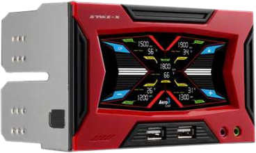
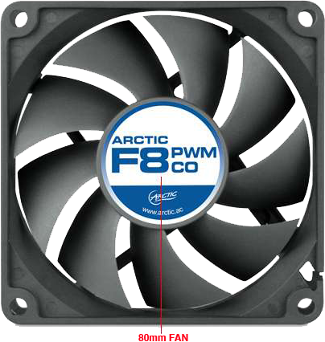
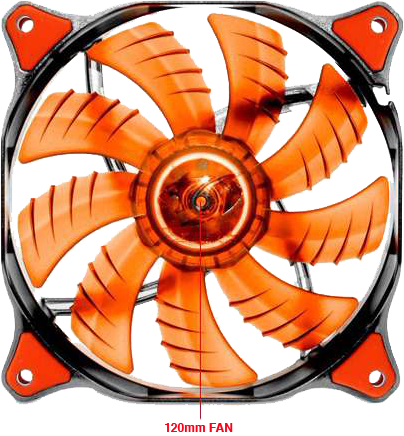
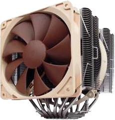

Aerocool X-Vision Fan and Temperature Controller - 5 Temp / 5 Fan, Color LCD, 5x Heat Sensors, 5x 3 Pin Connectors
Control your fan speed with ease using the Aerocool Fan and Temperature Controller. This temperature controller takes care of all your system heating issues. It comes with 5x Heat Sensors allowing you to handle up to five sets of fan speeds and temperatures using its color LCD. You can also change your temperatures and adjust between Celsius and Fahrenheit to avoid overheating. The 3-pin fan connector links to the motherboard immediately. Buy the Aerocool Fan and Temperature Controller today and increase the efficiency of your system.
$59.00

AeroCool Strike-X Panel Fan Controller - 5 Temperature, 5 Fan, Color Touch LCD
Use the AeroCool Strike-X Panel Fan Controller and get an innovative way of monitoring your system’s temperature. Featuring the attractive "touch" LCD technology, you would constantly be updated on the temperature readouts. It can handle as many as 5 sets of temperature and fan speed individually. You can also set an overheating alarm to alert you on any potential heat damage while also allowing you to swap between Celsius and Fahrenheit scales whenever required. It comes with 2 USB for easy connectivity. It also includes a microphone and headphone ports and an extra black bezel for ease of use. Purchase the AeroCool Strike-X Panel Fan Controller today.
$79.99

ARCTIC F8 PWM CO Case Fan - 80mm, 850 - 2000 RPM, 12 V, 0.16 A, 22 dBA, Dual Ball Bearing, With Standard Case, 24/7 Operation
Help your system perform at its heights using the Arctic F PWM CO Case Fan. This 80mm Case Fan is the best way of drawing heat discharged from your system. Bundled with Dual Ball Bearing type, it performs with greater competency and reduced friction. Rotating at 1000 - 2000 RPM and giving 12 - 36 CFM airflow, this case fan dissipates all heat emitted to allow a smooth functioning of the system. Designed to function throughout the day, it transfers the PWM signal from the CPU to the whole case ventilation system. It utilizes 12 V and is energy efficient. Coming with a standard frame, it allows either way installation for in taking or out talking air in the PC case. Invest in the Arctic F PWM CO Case Fan and draw heat away from your CPU right now.
Provide excellent cooling performance for your CPU with the Cooler Master Hyper N520 CPU Cooler. This excellent CPU cooler features a unique fan cooling design that ensures cool air accelerates straight through the heatsink and exits from the back. It also features the dual fan for air flow through heatsink with Wide Surface Aluminum Fin Design to improve heat dissipation and also comes with a 2 to 1 Plug Adapter for easy installation. It comes with 5 heat pipes to maximize heat transfer and deliver a better and smoother cooling performance. Plus, it supports several Intel and AMD socket processors. Grab the Cooler Master Hyper N520 CPU Cooler right away!
$42.99

Cougar Vortex PWM CFV12HPB 120mm Case Fan - Optimum Airflow, Hydro-dynamic Bearing Technology, Tool-less Fixed Pins, Pulse Width Modulation, Anti-vibration Pad, Black
For silent yet optimal airflow, the Cougar Vortex PWM CFV12HPB 120mm Case Fan is your best bet. The Cougar Vortex PWM CFV12HPB 120mm Case Fan features a PWM-FUNCTION to allow the mainboard to control the fan speed from 800-1500RPM. This case also comes with a high-vortex-airflow with turbine blade and frame patented design which optimizes airflow, and air pressure while maintaining silent operations. Its Anti-vibration pad design and Hydro-dynamic bearing technology reduce vibrations and friction for quieter operations. Purchase the ultra reliable Cougar Vortex PWM CFV12HPB 120mm Case Fan.
$19.99

Noctua CPU Cooler for Intel - 6 Heatpipe Dual Radiator, 140mm and 120mm Fan, 12V, MTBF 150,000 Hours
Optimize your CPU cooler with the Noctua CPU Cooler for Intel. This CPU cooler comes with 6 heat pipes for outstanding cooling performance. Plus, with 140mm and 120mm fans, it delivers a steady flow of air to keep your CPU cool even during extended use. Order the Noctua CPU Cooler for Intel today!
The Kraken X61 is the first consumer closed loop cooler with an integrated variable speed pump. The state-of-the-art Kraken is a variable speed pump that keeps noise to a minimum during use without sacrificing top end pump power. The 280mm radiator platform gives36% more surface area over comparable 240mm coolers. The Kraken X61 also has performance water cooling PWM fan tuned for radiator cooling.
Special Bonus: The Kraken+ CAM module is also available in CAM Mobile, allowing you to monitor temps and adjust your kraken fans and Hue remotely from the convenience of your mobile phone.